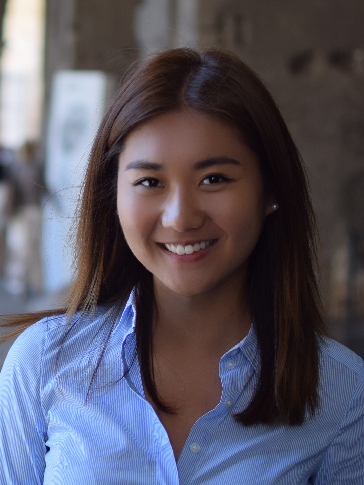

I am a communications specialist turned novice web developer. My professional background spans multiple fields, including Human Resources, Advertising, Public Relations, and Internal Communications. My experiences may seem varied, but each of these positions introduced me to different aspects of web development, from creating web campaigns, representing tech companies and startups in PR, to managing company intranet sites. It is from these experiences that I developed a passion for creating powerful, intuitive, and elegant web applications.
I am currently a student at the George Washington University Coding Boot Camp Full Stack program. I will complete the program in May.
I was born and raised in New York City, and I currently live in Alexandria, VA with my husband, Brandon, my daughter, Aurelia, and our black lab, Delancey.
Random facts about me:
- I was a Division I swimmer in college at Binghamton University in New York.
- I have lived in London, Hong Kong, and Brussels.
- Of all the cities I have travelled to, my favorite city is Rome.
- I have cat named Chairman Miaow from Hong Kong, but he is currently with my parents in New York. They cat-sat once, and have never let me take him back.
- I took 5 months of French classes while in Brussels. Maintenant, j'aime la langue!
- I speak fluent Cantonese but cannot read or write Chinese.
- I used to model and was represented by an agency in Washington, D.C.